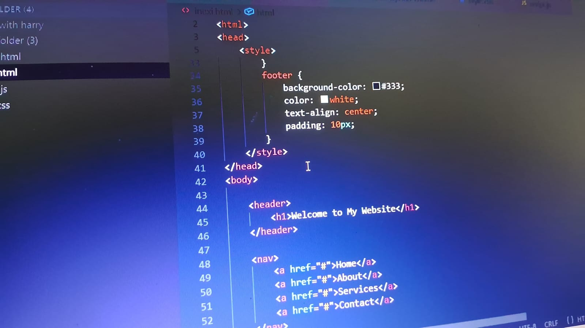
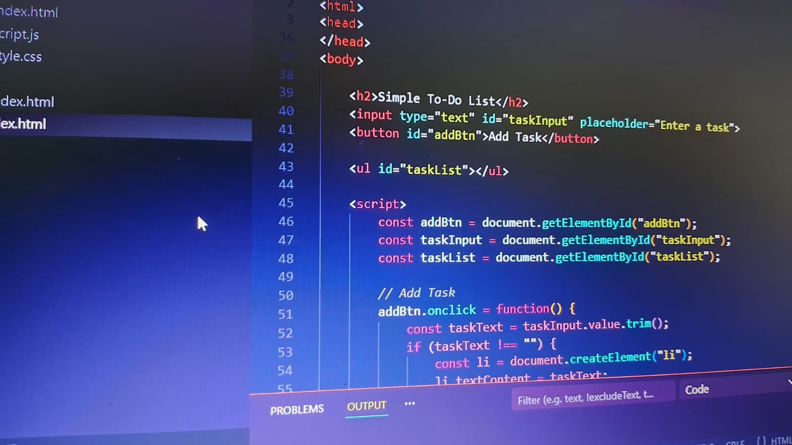

Basic HTML tags
On the first day, we learned the basics of HTML and how to structure a webpage with headings, paragraphs, lists(order and unorder), and div tags. we get to know about how tags work and how it`s matter even small changes and make it distrub how content is organized inside the browser.

Images, Anchors, Video, Tables
On second day, we learned how to add image,video,audio,link to make our web look good and clean. with the help of that we all undersand how user moves from one site to other . we can aslo join our two different HTML file with each other with the help of a .

Forms
on the 3 rd day. we learn about how the from made using from tag and for how to take the inpute from the user using input tag and how the files know what type of data we have to add using class="type" and we can aslo use placeholderfoe tellling the user what have to add

Header, Nav, Footer, Basic CSS
on the 4 th day .Learned to build structured web pages using HTML elements like header, navigation bar, main content, and footer. Applied basic CSS to style layouts, including colors, spacing, and interactive navigation, creating clean and user-friendly designs..

Box Model and Flexbox
on 5 th day .Understood the CSS Box Model, including margin, padding, border, and content, to control layout spacing. Used Flexbox to create responsive and flexible layouts, aligning and distributing elements efficiently..

JavaScript Basics
on 6 th day .Learned JavaScript fundamentals including variables, data types, functions, and basic DOM manipulation. Used JavaScript to add interactivity and dynamic behavior to web pages..

To-Do List
Developed a To-Do List application to manage daily tasks, allowing users to add, delete, and mark tasks as completed. Implemented using HTML, CSS, and JavaScript to create an interactive and user-friendly interface..